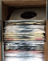

Alt Tal is a passionate and hard-hitting
|
Reviews
Alt Tal's Open The Gates! is the sound of a fierce jazz trio who are in control of their sonic destiny. These guys play a mixture of bebop, funk, soul, and whatever complex jazz terms you may have that describes the fluidity of imagination that happened between the 1950's and 1970's. They flow from styles to eras without a problem, smoothly as if everyone else has been doing this normally, but it's not abstract or out of the ordinary despite my description of it. Alt's solos tell the story, each described in lyrical form in the booklet even though none of the songs feature any singing, so you hear songs of closure (Mark Time), political struggle (Mossad), making tea (Jasmine), along with lovers and friends that have come and gone. Within that you hear some incredible playing, and the rhythm section of Annis and Ryan will definitely make you look out for these two either as individuals or as a duo, because I could hear them backing a lot of musicians up, or perhaps they become the leaders of other more perfect unions. The musicianship is very elaborate, as they play direct and to the point, occasionally drifting into a bit of freedom before falling back into the theme of the song, and I could easily see then moving crowds into a frenzy with their playing. Open The Gates! features 11 of Alt's originals which range from blues to freer material. David Alt's playing sometimes recalls that of Steve Lacy and (tone wise on alto) Anthony Braxton but his ideas are fresh and unpredictable. His thoughtful improvisations are consistently relaxed, even in the more heated sections, and have their own logic. To an extent he has created his own musical vocabulary. The music is well played, colorful, and well worth exploring. Here's a refreshing sound... basic sax, bass & drum trio that flawlessly improvises 11 all-original Alt compositions in a solid modern jazz performance that will put you in moods both introspective & joyful. The jumping piece The Nymph is most representative of the playful spirit the title would make you think of... it's track 4, l'Amoureuse de Mon Père, that will take you over the top, perhaps even jumping beyond resolute toe-tappin' to jumping up and dancing a bit... my favorite on the CD, to be sure. On "Amoureuse", the drums seem to propel it, & the bass provides superb counterpoint... David's sax paints a bubbly stream that will make you think of your father, no doubt. If you're favoring the reflective side at the current moment, be sure to check out "Force Of Nature", the tune I thought was the most mellow on the entire album. The overall impression I had was that this approaches improvised jazz with a decidedly "eastern" flavor, more studied and controlled than other reedists I've listened to who are doing it "from the hip", so to speak. All in all, very impressive & full of vigor... I rate this one as HIGHLY RECOMMENDED for jazz listeners who want to experience an album with many facets–excellent sound quality, high talent and sonic vistas you haven't heard before! This upbeat acoustic jazz trio encompasses engaging improvisations that will draw numerous audiences. This CD is also capable of opening the gates into the world of jazz for younger generations with the use of an admirable modern jazz approach. This is a band to be recognized. A trio led by saxophonist David Alt (who wrote all the tunes) with Kenny Annis (bass) and Andrew Ryan (drums). They range from the walking bass bop of "Elaine" to the Five Elements-sounding "Mossad," and the band brings the same vibrancy to every style, often giving the impression that more than three instruments are playing ("Jasmine"). I know I've said this before, but I'll say it again: it's easy to attempt Kind Of Blue-style open landscapes but tough to pull it off, and at times these guys rise to that level (the languid, vaguely Middle Eastern "Seven O'Clock Tune"). Would make a pleasant addition to any jazz enthusiast's collection. |